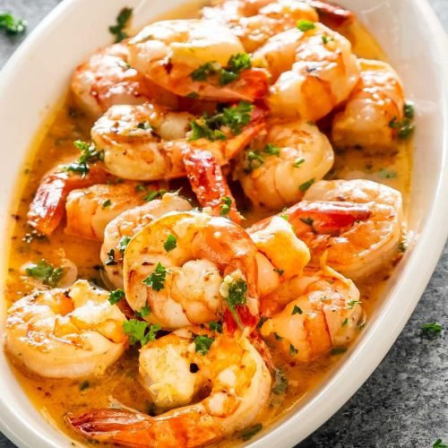

Garlic Butter Shrimp Scampi

Description
Garlic Butter Shrimp Scampi can be enjoyed as an appetizer/light meal OR for dinner with your favourite pasta of choice! You can also keep it low carb and serve over zucchini noodles or with steamed cauliflower! Either way it is delicious!
Ingredients
- 2 Tablespoons olive oil
- 4 tablespoons butter
- 4-5 large garlic cloves, minced (or 1 1/2 tablespoons minced garlic)
- 1 1/4 pounds (600 grams) large shrimp prawns, shelled with tails on or off
- Salt and fresh ground black pepper to taste
- 1/4 cup dry white wine or broth
- 1/2 teaspoon crushed red pepper flakes or to taste (optional)
- 2 tablespoons lemon juice
- 1/4 cup chopped parsley
Steps